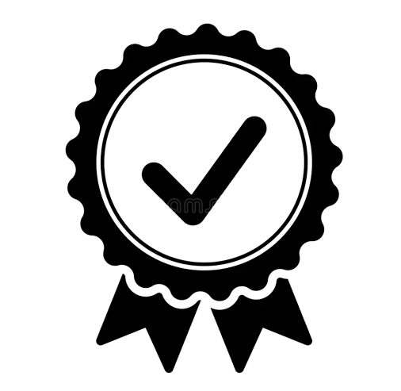
Accreditation
BAN-PT Accreditation of BIE. BAN-PT is an independent non-structural institution for accreditation of higher education institutions recognized by the government.
Facility
PTIK occupies a fairly representative and strategic building in the Fifth Campus (JPTK FTTE) of Sebelas Maret University. The campus is located on the Pabelan campus, Surakarta, which is the central campus of FKIP UNS. There are many other facilities to support the teaching and learning activities.
Entry Pathways
There are several university entrance pathways for prospective students to enroll in this study program.
Cucuk Wawan Budiyanto, S.T., Ph.D.
Assalamualaikum warahmatullahi wabarakatuh,
Studying at the undergraduate level will be a novel experience for students that just passed Senior High School level. It will be a milestone for those who seek knowledge, skill, and a determined path of their future career. Unpreparedness and uncertainty will be daunting for new students that have got used to learning in a more structured environment.
The curriculum reflects our effort to keep up teaching and learning material with the rapid technology growth, while maintaining pedagogy and instructional requirements to the highest quality. The curriculum development involves practitioners, educational experts, and graduates' users from Industry and schools alike to obtain industry insight that is embedded into the curriculum.
We encourage students to actively participate in local, national, and international events to expose them to the social, academic, and research community in information technology that they will be joining soon after graduating from the reputable institution.
Established in 2012, the Informatics Education Department, Faculty of Teacher Training and Education, Universitas Sebelas Maret remain in its infancy. However, the faculty achievement, network of expertise with users in Schools and Industry alike, encourage us to be more confident that success is a result of the effort of solid teamwork.
May Allah almighty bless us with guidance and perseverance to pursue our success.
Wassalamualaikum warahmatullahi wabarakatuh.
IJIE (Indonesian Journal of Informatics Education)
IJIE (Indonesian Journal of Informatics Education) is is a scientific journal promoting the study of, and interest in, informatics education. The journal publishes empirical papers on information systems, informatics, the use of technology learning, and distance learning. It is an international journal published by the Informatics Education Department, Faculty of Teacher Training and Education, Universitas Sebelas Maret, Indonesia annually on June and December (ISSN: 2549-0389 (Online))
JOIVE (Journal of Informatics and Vocational Education)
JOIVE is a peer-reviewed journal providing a forum for presenting the latest original research results and developments in the fields of informatics and applied computer science education. The journal promotes discussion among researchers, students, and practitioners in informatics and practical educators both in Indonesia and beyond where a distinctive methodology of teaching and learning informatics has been developed and is of great interest.
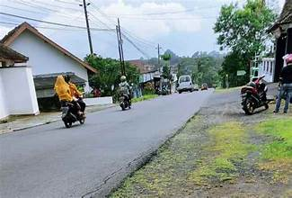
ISSAD Research Group Held Web-Based GIS Workshop for Matesih Village
Startups created by BIE/PTIK have succeeded in obtainining Funding in the Grant Startup Program
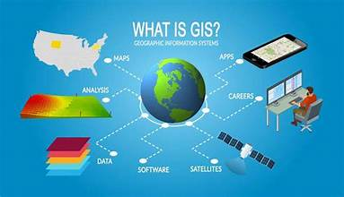
PTIK Study Program Service Activities Develop Web-Based GIS Applications for Mapping the Potential of Matesih Village
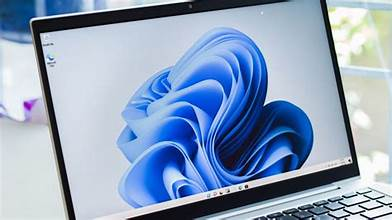
Windows 11 is Released, Should We Update or Stay?
PTIK Community Service Team Holds Augmented Reality Learning Media Development Workshop
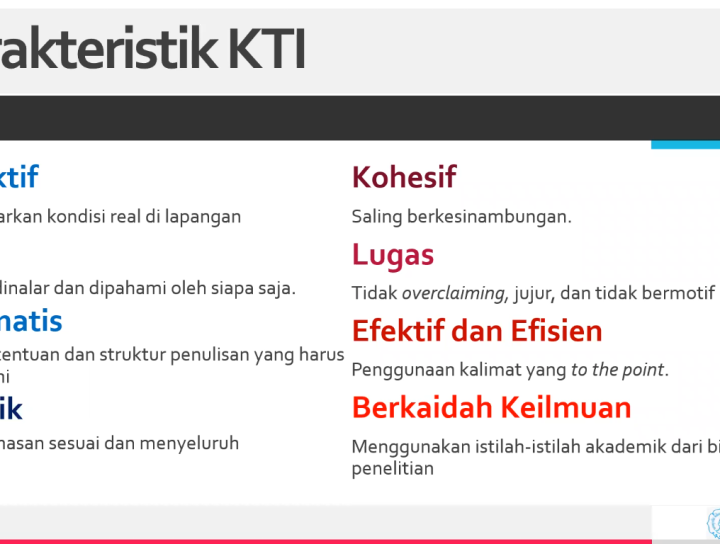
NGOPIDAY KTI Writing Bootcamp
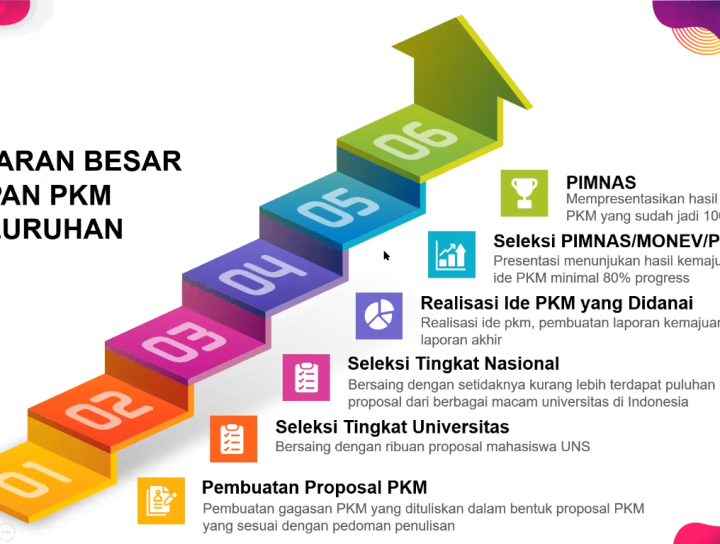
NGOPIDAY Sharing PKM Funding
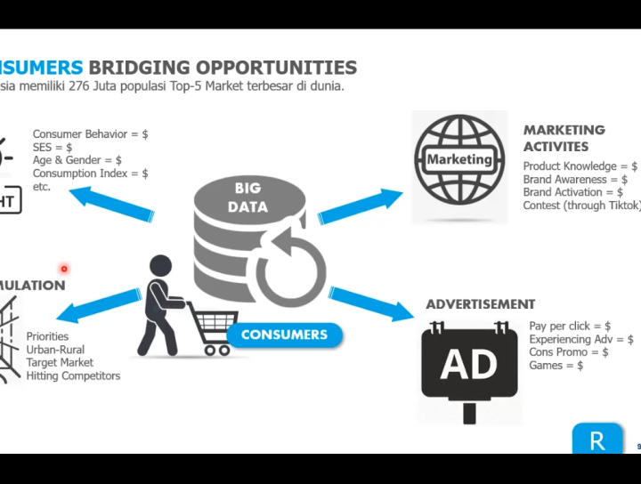
NGOPIDAY Sharing With Industry Practitioners
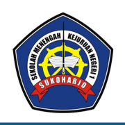
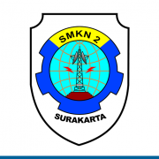
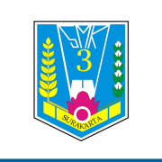
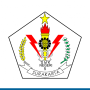
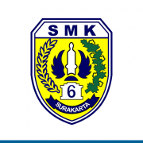
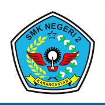
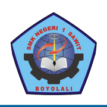
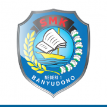